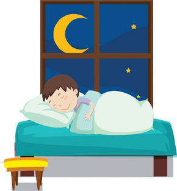
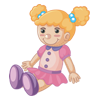

Gergő már éppen aludni készült, amikor... JAJJ A SZÖRNYEK!
Egy csupaszem, nyakigláb alak mászott ki az ágy alól.
Majd a szoba lakójától nem zavartatva magát rendezkedni kezdett a szobában.
-Kinek tetszik lenni és mit tetszik itt csinálni? - kérdezte félénken Gergő.
-Hmm...? - fordult Gergő felé az alak, miközben egy általa hozott tálból puncsszerű löttyöt töltött egy
papírpohárba.
-Mit tetszik keresni a szobámban? - ismételte meg Gergő.
-Szörnybuli. - vetette oda felgmán az alak.
-Hogy micsoda? - csodálkozott a kisfiú.
-Szörnybuli. - mondta türelmetlenül a szörny és egy papírlapot lóbált Gergő felé.
Az irka-firka valami meghívóféle volt, amin Gergő szobája szerepelt címként és aznap este
időpontként.
-Én nem szerveztem bulit. Holnap ovi, aludnom kell. Kérem távozzon! - háborodott fel Gergő.
De már látta, hogy nagyobb a baj, mint gondolta, ahogy egyre több furcsa alak kászálódott ki az ágy alól és
kezdett kedélyesen csevegni és iszogatni.
-Meg kell szabadulnom ezektől a tökfilkóktól. - döntötte el magában Gergő.
Ekkor egy velőt rázó sikoly rázta meg a szobát, amit egy szárnyas pufi lény menekülése követett a szobán
keresztül, vissza az ágy alá.
-Ki hagyta ott azt az izét. Hát nem tudjátók, hogy Béla retteg a maciktól? - méltatlankodott az első
"vendég".
Gergő a szétnézett a játékain és már tudta, mit kell tennie...
Üldözd el a szörnyeket a szobában heverő játékokkal! De vigyázz! Ha nem vagy elég gyors, újabb vedégek érkeznek a "buliba". Ha három próbálkozásból sem sikerül megtalálni megfelelő játéktárgyat, egy új szörny jelenik meg. Ha négynél több szörny lenne a szobába, a buli elszabadul és már nem lehet mit tenni. Az egyes szörny-tárgy párosokat alul láthatod. Kerüld a két zoknit, ami nem űz el senkit, de rumlit okoz a tárgyak között! Ha zoknit fordítasz telik az idő és a tárgyak megkeverődnek.


